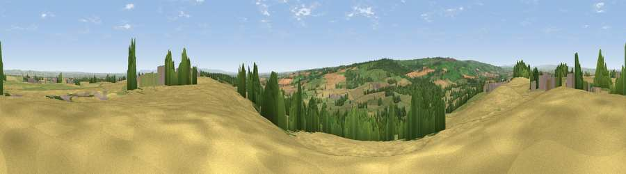

Viewpoint near Gilling West
#7851 in England · top 11% of its area beats it · near Gilling WestWhere it is
The exact computed spot (NZ 18025 07062). Click the marker for map links.
The view, rendered

A 360° render of this exact spot computed from the terrain model, tree cover and land cover — summer colours, afternoon light, calibrated against photographs of famous viewpoints. Real trees, hedges and buildings will differ in detail.
The panorama
Grey silhouette: terrain skyline in each direction (720 bearings, Earth curvature and refraction included). Dashed green: skyline with trees (+15 m) and buildings (+8 m) as obstacles. Blue strip: how far the ground is visible on each bearing.
Where the view opens
Wedge length = distance to the farthest visible ground on that bearing (vegetation-aware). Rings at 10, 25 and 50 km.
What fills the view
55% cropland · 31% grassland · 11% woodland · 2% built-up
Angular shares of the visible panorama (visual magnitude), not map area. Landscape diversity 0.44 (0–1 Shannon).
Key numbers
More beautiful places nearby
The staircase of upgrades: each row has a higher view potential than everything closer. Driving times are estimates from straight-line distance, calibrated against real road routing — check an actual route before setting out.
| Place | Direction | Drive | Score |
|---|---|---|---|
| Viewpoint near Gilling West | WNW · 1 km | ~3 min | 67.2 |
| Diddersley Hill | NW · 1 km | ~3 min | 67.3 |
| Viewpoint near Gilling West | SW · 3 km | ~7 min | 71.9 |
| Viewpoint near Barningham | W · 14 km | ~26 min | 72.7 |
| Viewpoint near Barningham | W · 15 km | ~26 min | 74.1 |
| Viewpoint near East Witton | SSW · 22 km | ~37 min | 74.4 |
| Viewpoint near East Witton | S · 22 km | ~37 min | 77.8 |
| Viewpoint near Ingleby Cross | ESE · 29 km | ~45 min | 78.8 |
54.45863, -1.72347 · source: screening · position refined by local search. Computed location — check access rights before visiting.